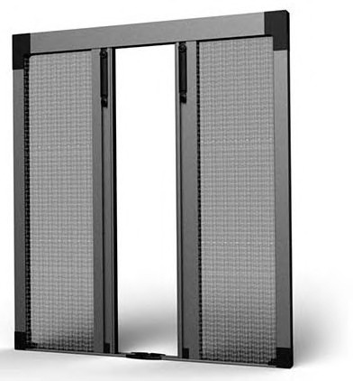

Zanzariere
SHARKNET APERTURA CENTRALE
MODELLO: SHARKNET_APERTURA_CENTRALE PAGINA PDF: 163
TESTO PDF: SHARKNET AAPERTURA CENTRALE APERTURA CENTRALE Zanzariera. plissettata con chiusura centrale simmetrica. •Apertura centrale •Ingombro 22 mm •Guida 4 o 8 mm •Blocco in qualsiasi posizione •Misure consigliate: L 5000 mm / H 3400 mm •Disponibile in più tipologie di rete Specifiche Tecniche Caratteristiche Principali